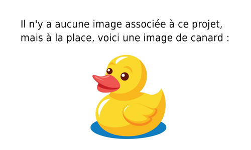

Traitement de fichiers
Développement d'une chaine automatisée de traitement de fichiers. Ce projet réalisé dans le cadre des cours a eu pour but de développer un outil multilangages pour traiter automatiquement des images et fichiers textes via des conteneurs Docker.
Technologies : PHP, Bash, Docker
Compétences : Développement PHP, Bash, utilisation de conteneurs
